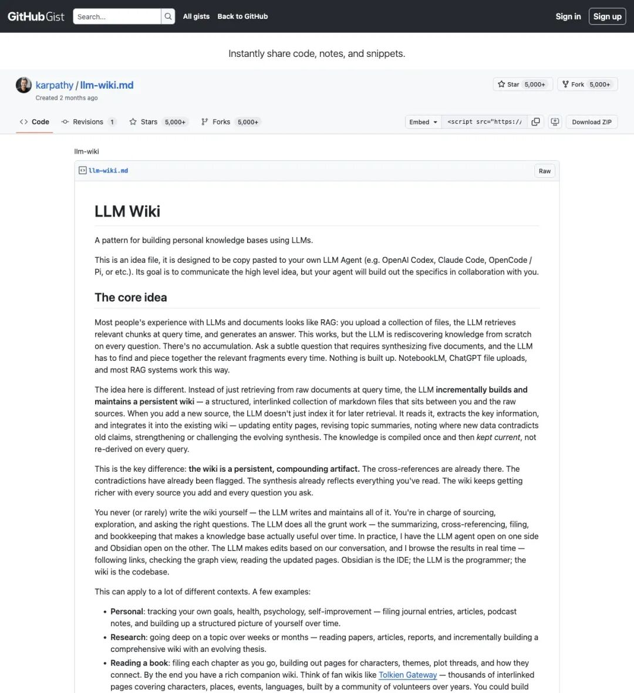
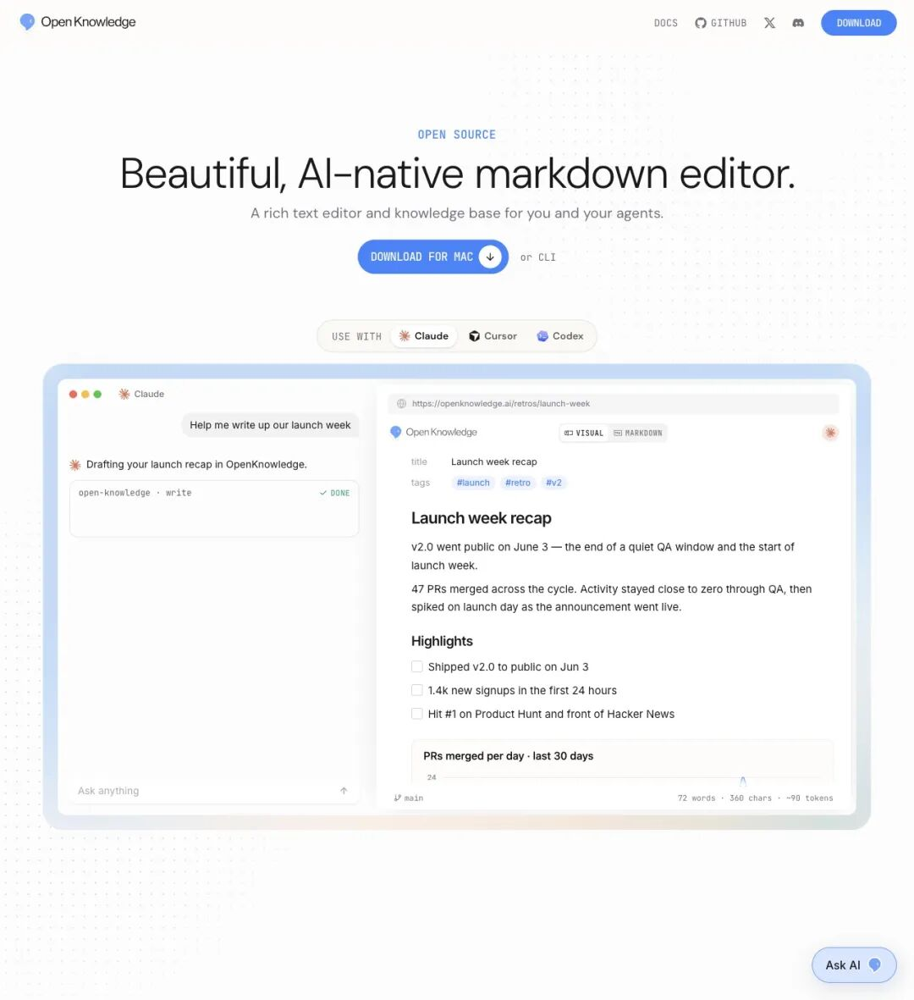
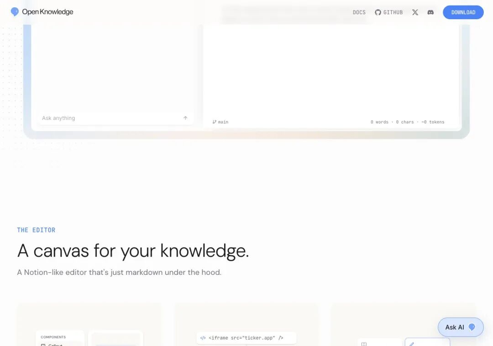
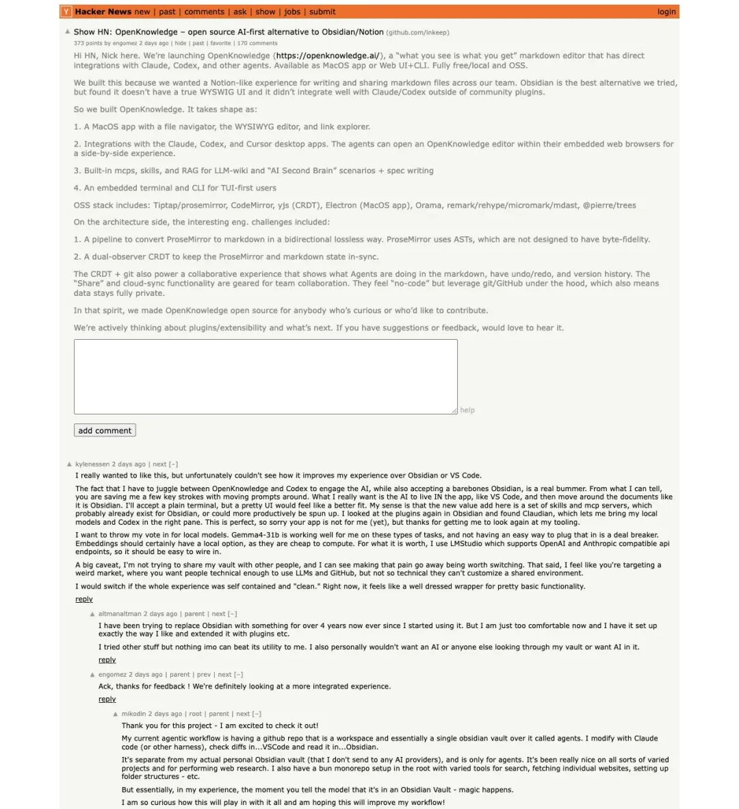
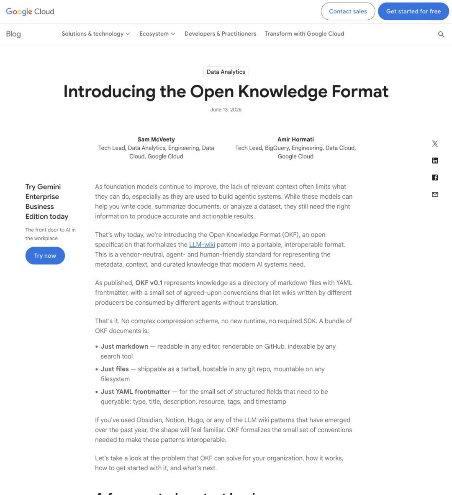

2026 年 4 月 2 日，Andrej Karpathy 在 X 上发了一个想法。
跟新模型无关。跟新架构也无关。是关于「人类该怎样跟 LLM 一起管理知识」的脑洞。
6 万多人点了赞。
2026 年 6 月 27 日，一位叫 Dan McAteer 的 Agentic AI 工程师发现了答案。
他录了一段 15 秒的视频。画面很朴素：拖进一篇持续学习论文，AI 自动生成可视化解释。他跟 AI 来回讨论了几个回合。他自己补了一节理解。最后，一键导出纯 markdown，扔进 Obsidian vault 做永久保存。
然后他写了这样一段：
"This is the best AI agent-first notes app I've found. It's called @OpenKnowledgeAI."
「这是我找到的最好的 AI agent 优先笔记应用。它叫 OpenKnowledgeAI。」
"It has the potential to be a productized version of Karpathy's 'LLM Wiki' knowledge bases."
「它有潜力成为 Karpathy『LLM Wiki』知识库的产品化版本。」
139 个赞，206 个收藏，12,800 次观看。算不上刷屏级的热帖。
但这段话捅破了一层窗户纸——Karpathy 半年前随手写在 gist 里的那个「应该有人做一个产品」的想法，有人把它当真了。
▲ Dan McAteer 的推文，演示了导入 → AI 生成可视化 → 人机迭代 → 导出 markdown 的完整闭环。206 人收藏了这个 workflow
Karpathy 的 gist 到底说了什么？
要理解这件事为什么重要，得先看 Karpathy 那个被 6 万人点赞的 gist。
他提出了一个概念：LLM Wiki。
现在的 RAG（检索增强生成）是这样用的：你每次问 LLM 一个问题，它都要从一堆原始文件里「重新发现」知识。没有积累。没有记忆。每次对话从零开始。
Karpathy 说，这整条路线是错的。
真正的模式应该是：LLM 增量编译并维护一个持久化的、结构化的 wiki——一堆相互链接的 markdown 文件。LLM 拥有它。LLM 更新它。LLM 做所有交叉引用和一致性维护。人类只需要提问和判断。
他在 gist 里精确画出了三层架构：
raw/—— 不可变的原始来源。论文、网页剪藏、截图、数据。LLM 只读不改。
wiki/—— LLM 完全拥有。实体页、概念页、总结、对比、索引、变更日志。交叉引用、矛盾标记、知识合成，全部由 LLM 自动完成。
schema（CLAUDE.md / AGENTS.md）—— 告诉 LLM「wiki 长什么样、怎么维护」的操作手册。
操作循环也很清晰：Ingest（摄入新来源 → LLM 自动触及并更新 10-15 个页面）→Query（问复杂问题 → 答案回写成新 wiki 页）→Lint（健康检查 → 标记矛盾、孤儿页、过时声明）。
Karpathy 把 Obsidian 比作「IDE 前端」。LLM 是「程序员」。Wiki 是「代码库」。人类几乎不需要手动编辑 wiki。

▲ Karpathy 的 LLM Wiki gist 首页。三层架构（raw/wiki/schema）和 Ingest → Query → Lint 操作循环被精确描述
他写了全篇最狠的一段话：
"The bookkeeping that causes humans to abandon personal wikis is exactly what LLMs are good at."
「导致人类放弃个人 wiki 的那种维护负担，恰恰是 LLM 最擅长的事。」
LLM 不会累。不会忘记更新反向链接。一次能改 15 个文件。维护成本趋近于零，而知识持续 compound——越滚越大，越滚越密。
然后在结尾，他埋了一颗种子：
"I think there is room here for an incredible new product instead of a hacky collection of scripts."
「我认为这里有一个做产品的巨大机会，而不只是一堆 hacky 脚本的拼凑。」
这颗种子，三个月后发了芽。
有人把 Karpathy 的蓝图一行一行实现了
inkeep。一家做企业级 AI agent 的公司，主营业务是客服和运营 agent。
他们的团队看到了一个更根本的问题：如果 agent 的核心能力是推理和行动，那 agent 的长期记忆层在哪里？
向量数据库不够。对话历史不够。Agent 需要真正拥有一个结构化、可编辑、可版本控制、可在不同工具间移植的知识库。
2026 年 6 月，他们发布了OpenKnowledge。
1,400+ GitHub stars。Hacker News Show HN 370+ 分，170+ 条评论。

▲ OpenKnowledge 官网首页。编辑器里直接展示了 Claude、Cursor、Codex 等 agent 的深度集成入口
它脱离了 Obsidian 插件和 Notion 替代品的常见框架。
它是一个让 agent 以一等公民身份操作知识库的应用。
把 OpenKnowledge 的架构和 Karpathy 的 gist 逐层对齐，对应关系精确到令人不适：
Dan McAteer 用了一个精妙的对比来总结本质差异：
"Bring the app into your agent vs bring your agent into your app."
「把应用带进 agent」，对照的是「把 agent 带进应用」。
传统思路是往笔记软件里塞一个 AI 聊天框。OpenKnowledge 的思路是把整个笔记软件变成 agent 可以操作的对象。方向一转，产品逻辑全变了。
WYSIWYG 的表象下，藏着三把硬刀
表面看，OpenKnowledge 是一个长得像 Notion 的编辑器——块编辑、Callout、Accordion、Mermaid 图表、HTML 嵌入。所见即所得。
底层是货真价实的 markdown 文件，存在本地磁盘上，用 git 做版本控制。没有 vendor lock-in。没有云同步的隐私问题。
这本身已经够好了。但真正的杀招在下面这三层：
第一，原生 MCP（Model Context Protocol）。
MCP 是 Anthropic 推出的开放协议，让 LLM 能标准化地调用外部工具。OpenKnowledge 原生支持 MCP，意味着 Claude、Cursor、Codex 这些桌面应用可以直接通过 MCP 读写你的知识库——零插件、零配置。
你在 Claude Desktop 里跟 AI 讨论一个概念。AI 说「让我查一下你的知识库」。然后它直接在 OpenKnowledge 编辑器里读取、编辑、创建页面。你坐在旁边看着它操作。
这个体验，Obsidian 做不到。Notion 做不到。任何现有笔记应用都做不到。
Dan 在帖子里专门吐槽了这一点：
"There's no way to have the Obsidian UI open in the in-app browser in Claude/Codex today."
「现在没法在 Claude 或 Codex 的应用内浏览器里打开 Obsidian 的界面。」
OpenKnowledge 把这个问题解决了：agent 可以在 Claude Desktop 的内嵌浏览器里直接打开编辑器，实现「肩并肩」共创。
第二，Agentic Search。
关键词搜索只是入口。核心是 embedding + 分层 RAG。Agent 能精准定位跟当前问题最相关的 wiki 段落，省掉在一串文件名里来回翻找。
第三，ProseMirror ↔ markdown 双向无损转换 + CRDT 协同。
普通富文本编辑器用自己的一套内部 AST，导出 markdown 时会丢失空格风格、列表格式、frontmatter 元数据。OpenKnowledge 团队实现了真正的「双向保真」——在「看起来像 Notion」和「底层是纯文件」之间没有信息折损。
CRDT（yjs）机制支持多人 + 多 agent 同时编辑，不会冲突。
这个技术难度，是它必须作为一个独立产品存在、而不能「做成 Obsidian 插件」的硬理由。

▲ OpenKnowledge 官网向下滚动后的编辑器展示区。页面强调它是底层使用 markdown 的 Notion-like editor
HN 370 分，吵了 170 楼
Hacker News 的 Show HN 板块从来不客气。OpenKnowledge 拿了 370+ 分，评论区 170 多条，吵得很凶。
挺的人说：终于有一个 WYSIWYG + 内置 agent 能力 + 本地 markdown 的工具了。git 协同抽象做得聪明。MCP 集成是真正的差异化。
喷的人说：为什么不做 Obsidian 插件？Electron 桌面端，细节交互不如原生 macOS 顺滑。local model 支持还在早期。目前 macOS 桌面优先。
作者 engomez 和 Nick 在评论区高强度回复：正在加深 OpenCode、Zed、local model 的集成；部分配置冲突已修；内容就是本地文件 + git，任何 git 工具都能接管。

▲ Hacker News 的 Show HN 讨论，370+ 分，170+ 条评论。社区对 agent-first 方向高度认可，对实现细节持续追问
批评声不无道理。
WYSIWYG 和 markdown 字节保真之间的张力，是编辑器领域几十年的老问题。ProseMirror 方案解决了大部分，但选择、滚动、快捷键的细微体验仍可能与原生 macOS 有差距——HN 评论里不止一个人提了这件事。
Agent 写入过多可能产生「幻觉 wiki」——AI 一口气改你 15 个文件的时候，你怎么确保它没往里面塞不存在的事实？需要比 lint 更强的验证机制。
但 HN 的整体判断是乐观的。因为方向是对的。
Google 下场，把个人脑洞变成了行业标准
2026 年 6 月 13 日，Google 正式发布OKF（Open Knowledge Format）v0.1。
它的定位更接近标准，而非产品。
纯 markdown + YAML 元数据（type 字段必填）。Git 友好。生产者和消费者完全解耦——任何一个 OKF 兼容工具生成的知识，都可以被任何一个 OKF 兼容的 agent 消费。
Google 的公告明确引用了 Karpathy 的 LLM Wiki 概念。
OpenKnowledge 第一时间宣布支持 OKF 模板。

▲ Google OKF 公告。一个被 Karpathy gist 点燃的个人脑洞，被 Google 固化为可互操作的知识资产标准
这条链走得异常清晰：
Karpathy 提出模式 → 社区大量 fork 和实现 → Google 固化为标准 → OpenKnowledge 等产品提供最佳体验。
四步走完，一个 idea file 变成了一条赛道。
「每一款第二大脑应用，从此刻起都是过渡技术」
AI 产品分析师 Aakash Gupta 在 Karpathy 帖文下留了一句很重的话：
"Every second brain app just became a transitional technology."
「每一款『第二大脑』应用，从这一刻起，都变成了过渡技术。」
这话说得绝对。但逻辑是硬的：
如果 LLM 真的能替你做所有枯燥的知识维护，那「手动整理笔记」这件事本身就会消失。
人类角色从「写作者」变成「策展人 + 问题提出者」。
你负责 sourcing——找到好的信息来源。你负责提问——定义什么问题是重要的。你负责判断——AI 总结的东西到底对不对。
LLM 负责剩下的一切：更新反链、保持一致性、发现新连接、标记矛盾、合并重复、格式化输出。
Karpathy 在 gist 里反复强调的就是这个分工：人类做高杠杆的判断，LLM 做低杠杆的维护。当这个分工在产品里自然发生时，「LLM Wiki」就被真正产品化了。
拼图还差最后几块
OpenKnowledge 踩准了很多步。但距离 Karpathy 设想的那个「incredible new product」，还有几个关键的坑要填。
Local model 深度支持。现在是 API 驱动。社区最强烈的要求是 Ollama / LM Studio 的原生集成——离线、隐私、零延迟。很多人不愿意把个人知识库喂给云端 API。
Agent 写入的可信度。AI 改 15 个文件的时候，怎么保证没悄悄塞进幻觉？需要比 lint 更强的机制：写入时自动标记置信度、交叉验证引用来源、人类一键审批变更集。
企业级多租户。Git 给了版本控制的基础，但权限、review、原子化多文件变更，在企业协作场景还远远不够。
与 Claude Artifacts、Cursor、NotebookLM 的长期竞速。这些产品都在「visual + durable」的维度上发力。OpenKnowledge 的护城河是本地文件 + agent 原生，但护城河需要持续挖深。
半年时间。
一个 gist → 6 万个赞 → 几十个社区实现 → 一个 Google 标准 → 一个 1.4k star 的产品。
Karpathy 那句「there is room here for an incredible new product」，正在被一行一行地兑现。
Dan McAteer 的帖只拿了 139 个赞。
但 206 个人把它存进了书签。
他们知道自己在等什么。